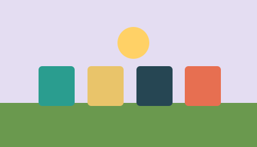
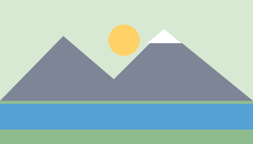

5.10.2026
Grüngutabfuhr im Winter
Von Dezember bis Februar wird das Grüngut nur noch alle zwei Wochen abgeholt.

5.10.2026
Von Dezember bis Februar wird das Grüngut nur noch alle zwei Wochen abgeholt.

8.10.2026
Am 6. November ziehen die Kinder um 18 Uhr mit ihren Laternen durchs Dorf.

11.10.2026
Wegen Belagsarbeiten ist der Seeweg vom 3. bis 21. November gesperrt.

14.10.2026
Ab Januar ist die Bibliothek zusätzlich am Samstag von 9 bis 12 Uhr geöffnet.